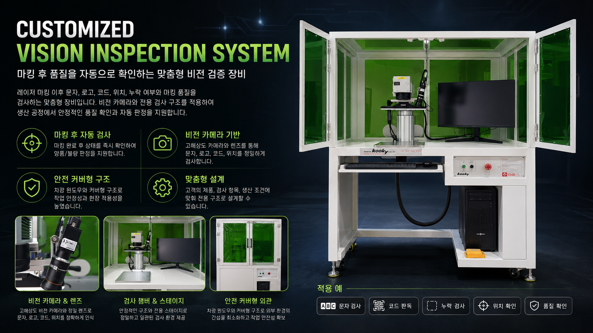
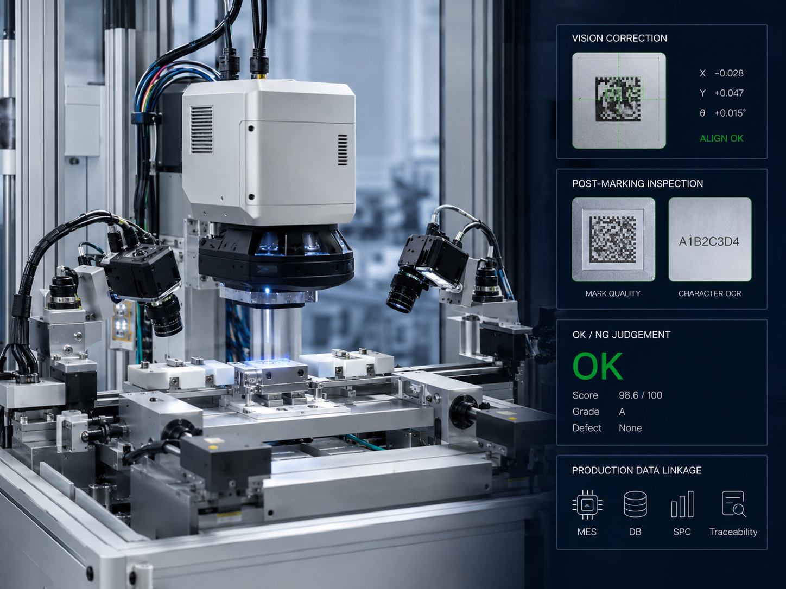

비전 마킹 검사 시스템
마킹 위치 보정과 검사 판정을 하나의 공정으로 구성할 수 있습니다.
부품 위치 편차를 카메라로 확인하고 마킹 위치를 보정해 안정적인 품질을 확보합니다.
마킹 후 문자, QR, Data Matrix 판독과 OK/NG 판정을 연계할 수 있습니다.
컨베이어, 턴테이블, 로터리, 지그, 로봇 등 생산 환경에 맞춰 구성을 검토합니다.
생산 일자, LOT, 시리얼, 검사 결과를 DB, MES, 엑셀, 파일 등과 연동할 수 있습니다.
실제 구성은 소재, 마킹 크기, 사이클 타임, 자동화 범위에 따라 달라질 수 있습니다.
| 구성 범위 | 레이저 마킹기 + 지그/컨베이어 + 비전 + 검사 + 데이터 연동 |
|---|---|
| 적용 레이저 | Fiber / UV / CO2 공정별 선택 |
| 검사 항목 | 문자 유무, 코드 판독, 위치 확인, 중복 마킹 방지 등 |
| 데이터 | 시리얼, LOT, 날짜, 제품명, 검사 결과, OK/NG 이력 |
| 설비 형태 | 수동 지그, 반자동, 인라인, 고객 맞춤형 자동화 |
| 상담 기준 | 제품 도면, 샘플, 사이클 타임, 마킹 내용, 통신 방식 확인 |
금속 부품의 시리얼, LOT, QR, Data Matrix 추적 관리
소형 부품의 정밀 위치 보정과 코드 판독
외관 품질과 추적성이 필요한 부품의 검사 연동
컨베이어, 로터리, 지그 기반 반복 생산 공정
마킹 위치 보정과 검사 판정을 하나의 공정으로 구성할 수 있습니다.

마킹 품질과 코드 판독 결과를 검사 데이터로 관리합니다.

생산 설비와 연동하여 반복 마킹 공정을 안정화합니다.
소재 샘플과 목표 마킹 내용을 보내주시면 조건 검토 후 적합한 레이저 구성을 제안합니다.
가능합니다. 공간, 이송 방식, 통신 방식, 안전 커버, 집진 조건을 확인한 뒤 연동 방식을 검토합니다.
가능합니다. 비전 카메라와 판독 알고리즘을 연계해 OK/NG 판정과 이력 저장을 구성할 수 있습니다.
제품 샘플, 도면, 마킹 내용, 목표 사이클 타임, 설비 배치도, 통신 요구사항이 있으면 검토가 빠릅니다.